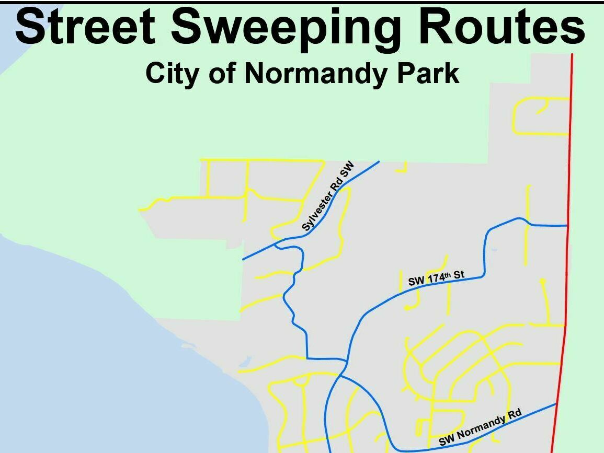

About Me
I'm pursuing a Master of Science in Geospatial Technologies at the University of Washington Tacoma. As an intern at the City of Normandy Park, I complete all needs related to GIS and inspect the stormwater system. Knowledgeable in local governance and community development. Seeking opportunities to apply my 1.5+ years of experience with ArcGIS.
View my portfolio below to see projects from my programs of study and internship.
Contact me at connorwright731@gmail.com.
Portfolio
Web Mapping
Internship Projects
Stormwater Infrastructure of Normandy Park
I designed this web app and have greatly contributed to the content in the map with inspections, georeferencing site plans and design.
Critical Areas in Normandy Park
I designed this web app for the Community Development department to use for analyzing permits in sensitive areas.
Zoning Amendment Proposals
